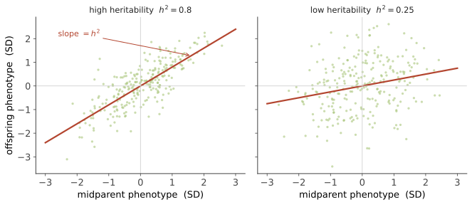

本页目录
遗传 I · 从孟德尔到定量遗传
证据地位：孟德尔规律与定量遗传的数学【实】；遗传力的解释【争】——本页后半是全课最容易被误用的概念，会花力气讲清。 遗传学有一道著名的裂缝：孟德尔研究的是离散性状（圆皱、黄绿），而现实中多数性状（身高、血压、智力测验分数）是连续的。这道裂缝在二十世纪初曾让两派学者激烈对立，最后由 Fisher 用数学弥合。本页从孟德尔重建，走到定量遗传，并把"遗传力"这个被滥用得最厉害的概念钉清楚。
一、孟德尔：把遗传离散化
分离定律：每个个体对某基因有两个拷贝（等位基因），配子形成时二者分离，各进入一半配子。自由组合定律：不同基因的等位基因独立分配——前提是它们不在同一条染色体上或相距足够远（下页的连锁会修正这一点）。
孟德尔的真正贡献不是"发现了显隐性"，而是把遗传当成离散粒子的传递，并用数学预测比例（F₂ 的 3:1、9:3:3:1）。在此之前主流是"混合遗传"（后代性状是双亲的平均），而混合遗传有个致命问题——它会迅速耗尽变异（每代方差减半），那样自然选择就无材料可用。达尔文本人被这个问题困扰，而答案（颗粒遗传保存变异）就躺在他同时代的孟德尔论文里，只是他没看到。
扩展：不完全显性、共显性（AB 血型）、复等位基因、致死等位、多效性（一个基因影响多个性状）、上位性（一个基因掩盖另一个的效应）。这些不是对孟德尔的否定，而是同一框架下的复杂化。
二、连锁与重组：染色体这条线索
Morgan 用果蝇发现某些性状不独立组合——它们位于同一条染色体上，连锁在一起。但连锁不是绝对的：减数分裂时同源染色体交换片段（交叉互换），产生重组。
关键洞见：两个基因相距越远，被交换分开的概率越大。于是重组频率可以当作距离：
这就是遗传作图的原理——在完全不知道 DNA 是什么的年代，人们靠统计杂交后代就画出了基因的线性排列图。这是遗传学史上最漂亮的推理之一，也是下一页 GWAS 的直接祖先。
三、连续性状：Fisher 的弥合
如果遗传是离散的，为什么身高是连续的？Fisher 1918 年的答案：若一个性状受许多基因影响，每个效应微小且可加，再叠加环境噪声，那么由中心极限定理，性状分布将趋于正态，且亲子间呈线性回归关系。
离散的基因 + 大量位点 = 连续的表型。 这一步统一了孟德尔学派与生物统计学派，也奠定了整个定量遗传学。顺带一提，Fisher 为处理这个问题发明了方差分析（ANOVA）——统计学的一个支柱，源自遗传学问题。
基本分解：把表型方差拆成组分
其中遗传方差还可再分：\(V_G = V_A + V_D + V_I\)（加性、显性、上位）。加性方差 \(V_A\) 特别重要，因为只有加性效应能可靠地从亲代传给子代（子代得到的是等位基因，不是基因型组合）。
四、遗传力：本页的核心，也是最大的陷阱
定义（狭义遗传力）：
它的正确含义：在特定群体、特定环境下，表型方差中可归因于加性遗传方差的比例。

估计方法：亲子回归（斜率即 \(h^2\)）、双生子比较（同卵 vs 异卵）、全基因组相关性（下页）。
四个必须记住的误读（这是本页最有价值的部分）：
① 遗传力不是"基因决定的百分比"。 它是关于方差的陈述，不是关于个体的。说"身高遗传力 0.8"不等于"你身高的 80% 由基因决定"——后者根本没有意义，因为每个人的身高 100% 需要基因，也 100% 需要环境（没有营养就长不高）。
② 遗传力依赖于环境的方差。 若环境高度均一，\(V_E\) 小，遗传力自动升高；反之降低。在营养充足的富裕社会，身高遗传力高；在营养匮乏且不均的社会，遗传力低——同一性状，遗传力可以完全不同。这不是测量误差，是定义使然。
③ 高遗传力不意味着不可改变。 经典反例：视力的遗传力很高，但一副眼镜就能矫正；苯丙酮尿症是单基因病（遗传力极高），但改变饮食即可避免智力损害。遗传力谈的是当前变异的来源，不是干预的可能性。
④ 群体内的遗传力，不能解释群体间的差异。 这是最严重的误用。经典比喻：把同一批种子分种在肥沃与贫瘠两块地里，每块地内部的高度差异可能几乎全部来自基因（组内遗传力高），但两块地之间的平均差异完全来自土壤。组内遗传力与组间差异的成因，在逻辑上无关。 历史上关于群体间性状差异的诸多主张，几乎都栽在这一条上——这个逻辑错误已被反复指出，务必记牢。
五、育种：遗传力的实际用途
在农业与畜牧中，遗传力有明确的实用价值。育种者方程：
\(S\) 是选择差（被选作亲本的个体，其均值高出群体均值多少），\(R\) 是响应（下一代均值提高多少）。遗传力在这里是一个可操作的预测参数：它告诉你选择能带来多少实际改进。
这个公式支撑了二十世纪的作物与家畜改良（玉米产量、奶牛产奶量的巨大提升）。它也提醒我们遗传力概念的原始语境——它是为育种设计的工具，用来预测特定群体在特定环境下的选择响应。把它搬去回答"人类某性状有多少是天生的"，属于超出设计用途的使用。
六、单基因与多基因：一个连续谱
最后建立一个全局图景，为后面几页铺路：
- 单基因（孟德尔）性状：囊性纤维化、镰状细胞、亨廷顿病——单个基因的变异即可决定表型，遵循经典遗传模式，但仍受修饰基因与环境影响（外显率、表现度）。
- 寡基因性状：少数几个位点主效。
- 多基因（复杂）性状：身高、多数常见病、行为特征——成千上万个位点，每个效应极小（常常单个位点解释不到 0.1% 的方差），加上环境与相互作用。
绝大多数常见性状属于最后一类，这正是下一页 GWAS 要面对的局面，也是"某某基因决定某某"这类新闻标题几乎总是误导的原因——对复杂性状而言，不存在"那个基因"。
下一页：遗传 II——群体遗传学核心。把视角从家系放大到群体，引入漂变、选择、突变与迁移。这是生物学中数学化最深的部分，也是通向演化线的桥。